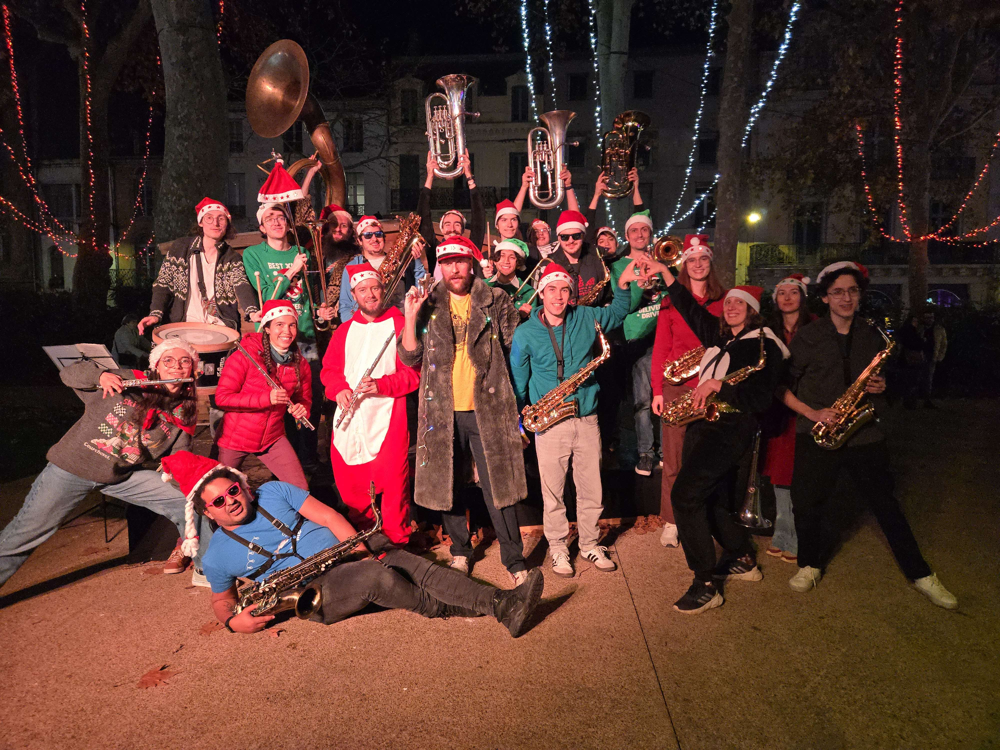

Currently beginning my studies in Digital Sciences at ENSEEIHT, I am passionate about theoretical computer science.
My LinkedInThis section details my progress through my Engineering Master's Degree. It will be regularly updated.
I played tennis for 5 years, participating in several individual and team competitions which led me to a ranking of 30/3.
I went swimming for 7 years to maintain my physical fitness
I am currently a member of the school band, which organizes events that bring people together and create a cheerful atmosphere.
At the end of the year, I will be doing a one-month internship in Japan organized by the school.
For my CV in english, please click here
For my CV in french, please click here
Here is a quick elevator-pitch if you want to discover me in less than 3 minutes. Click here
Here is a quick introduction in Japanese. Please note that I am a beginner; I started learning Japanese at the beginning of the year. Japanese Presentation